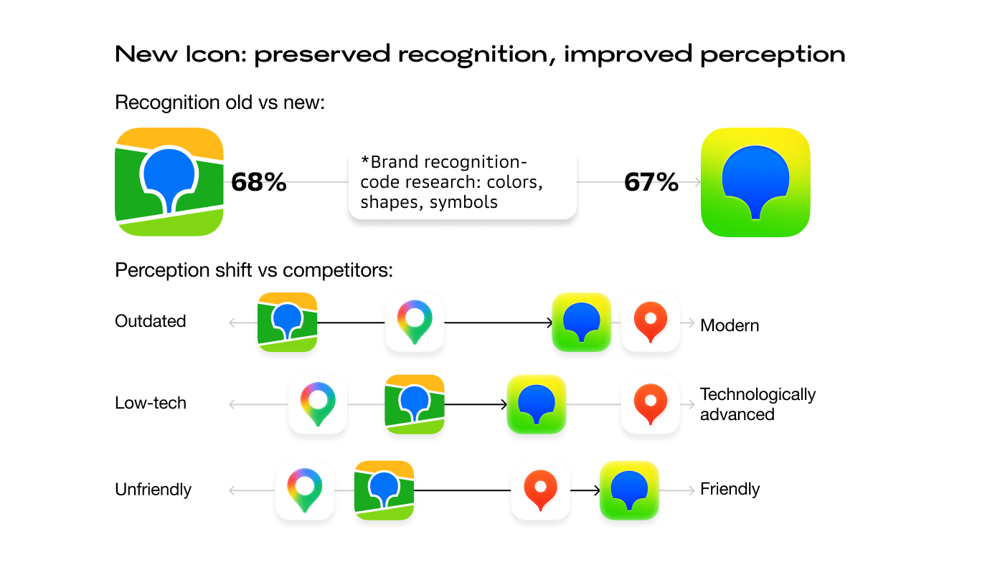
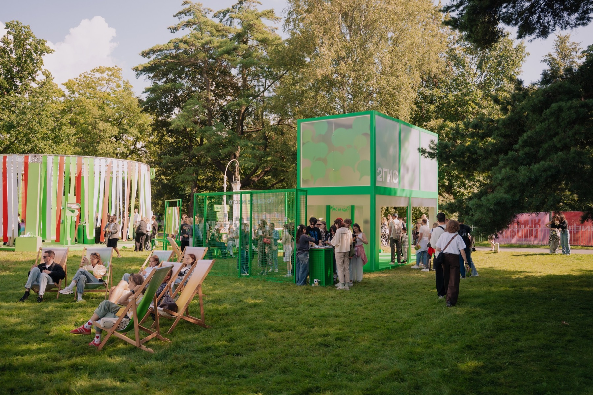
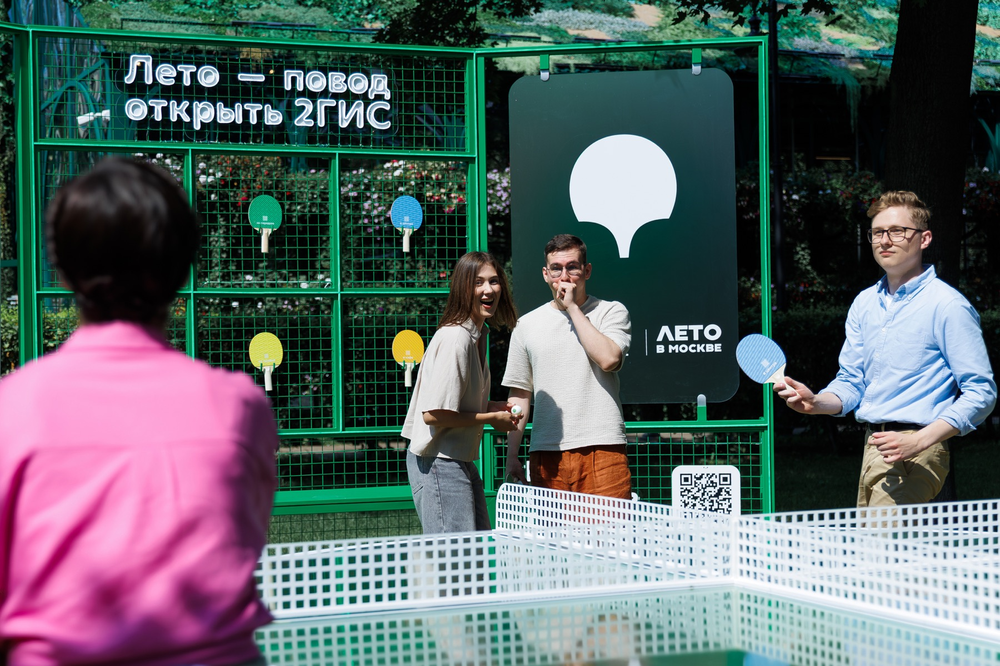

A practical rule set for aligning creative work across teams, formats and launches.
2GIS
Changed brand perception through creative operations.
I joined 2GIS as Brand Manager, but the real task was to create brand impact through the levers that already existed: campaign briefs, creative testing, visual systems, product launches and city activations.
Context
2GIS was entering priority urban markets where many people already knew the brand, but still defaulted to a competitor. Prompted awareness was high, while spontaneous awareness, top-of-mind and modernity perception needed to grow.
At the same time, brand did not yet have the classic levers: a standalone brand budget, a mature creative process or a fixed operating model inside marketing. Most investment was tied to performance, product and regional campaigns, so changing perception had to happen through the work already moving: campaign launches, creative production, testing, social, product stories and city projects.
My role
- Worked as a Brand Manager with a creative strategy and operations mandate: making brand useful inside real campaign and product work.
- Built an evidence-led process for brand, creative and campaign decisions.
- Hired and shaped the first in-house creative capability: two creators and a strategist around a clear brief-to-launch workflow.
- Drove alignment across CEO, CMO, CPO, product leaders, senior marketing managers and commercial leadership.
- Led by credibility rather than formal reporting lines: design, analytics, editorial, product and performance sat in adjacent teams.
Result
Rebuilt creative operations
The work moved brand and creative decisions from separate one-off tasks into a repeatable system: insight, positioning, message, visual direction, testing, launch measurement and iteration. Campaigns became easier to brief, align and improve.
The process connected strategy, creative production, testing, campaign launch and iteration.
Brand interest, social signals, campaign learnings and creative-test results started feeding the next briefs.
Flagship campaign
The flagship campaign idea was "A reason to open 2GIS" - both a slogan and a CTA. For people used to another map service, the campaign sold 2GIS through concrete city moments where trying the product made sense.
The campaign made 2GIS easier to remember about two months after launch: spontaneous awareness grew from 28% to 42%, and top-of-mind awareness grew from 18% to 28%. We also saw strong MAU growth, but exact figures are under NDA.
Changed the icon after 12 years without losing recognition.

2GIS was perceived as more outdated, less technological and less friendly than the competitor. The icon was the hardest asset to change: it had not changed for 12 years, the visual system was fragmented, and there were almost no other strong recognizable brand assets.
I led the research logic behind the redesign: we deconstructed what made the brand recognizable - color combinations, shapes and symbols - then used that recognition code to make the icon feel more modern while preserving brand equity.
Brand zones

Made the refreshed brand feel relevant to active city culture.
I shaped the zone for a major music festival where 2GIS needed to interest active, culture-driven city people who could shift perception of the brand. The refreshed visual system made the brand feel more modern and drew strong qualitative feedback plus an estimated 3-4K visitors.

Showed how 2GIS helps friends meet in the real city.
We reached the same active urban audience in the city itself: a place to play, spend time with friends and experience the brand. It made the new social features tangible - 2GIS as a product that helps you see friends nearby and meet more often.
Naming special project
Another organic special project played with the many ways people name 2GIS - "DublGIS", "DvaGIS", "TuGIS". We placed three large media facades at a major interchange and launched an Instagram Reel built on a chat-argument trend.
The result came against a typical Reels baseline of about 5K views.